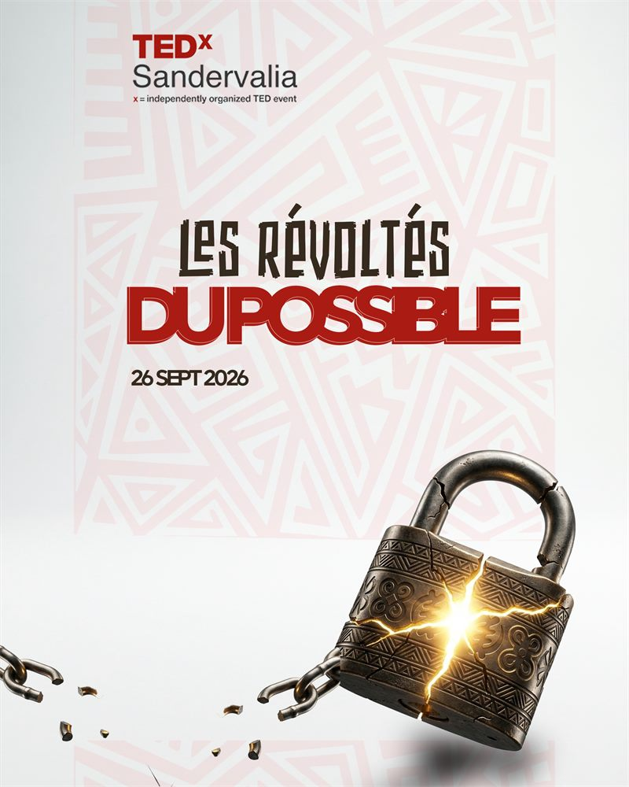

2026 · 4e édition
Les Révoltés du Possible
26 septembre 2026 · Centre Culturel Franco-Guinéen, Conakry
Une édition consacrée à celles et ceux qui refusent de considérer que le monde actuel est le seul possible. Cinq talks : Safiatou Diallo, Maimouna Barry, Amadou Saada Tall, Ali Baldé et Elhadj Bah.
Voir l'édition 2026